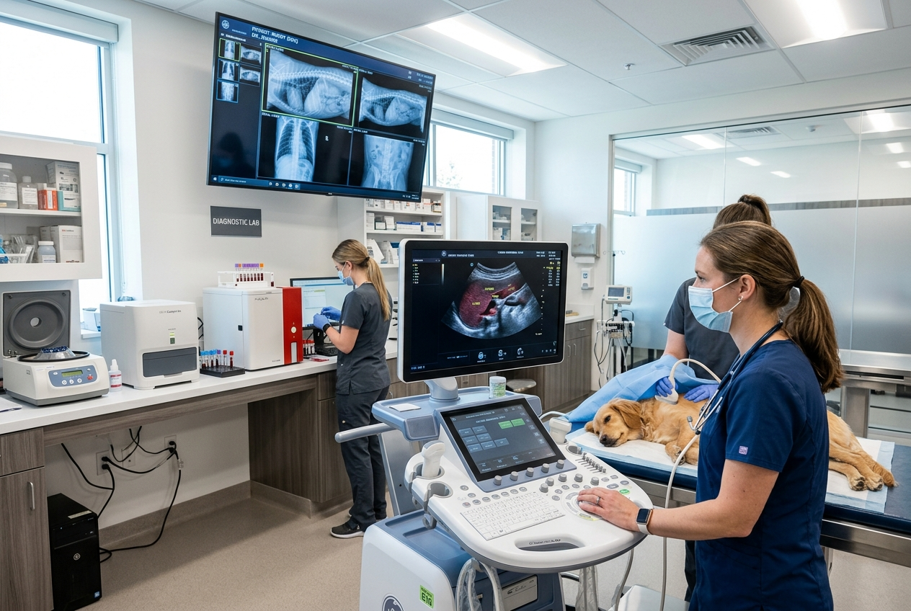
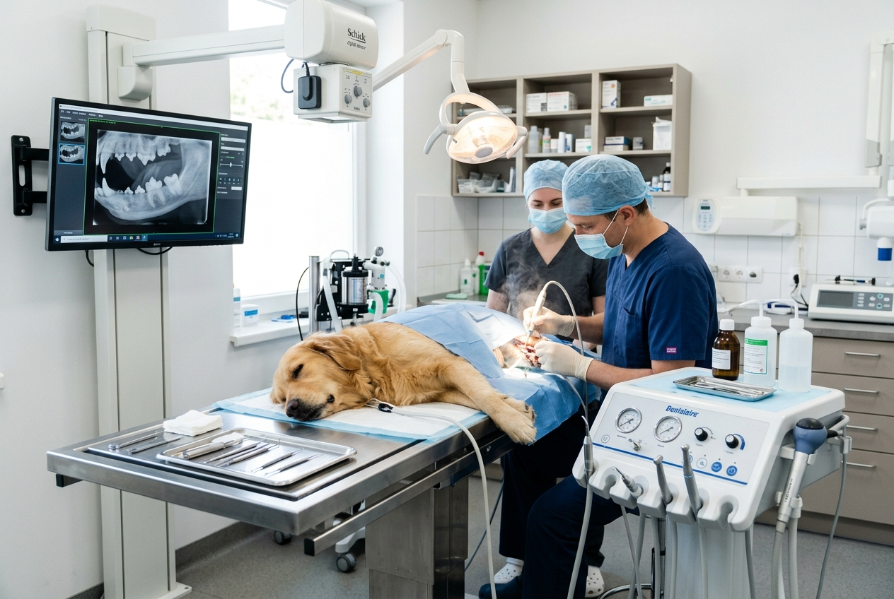
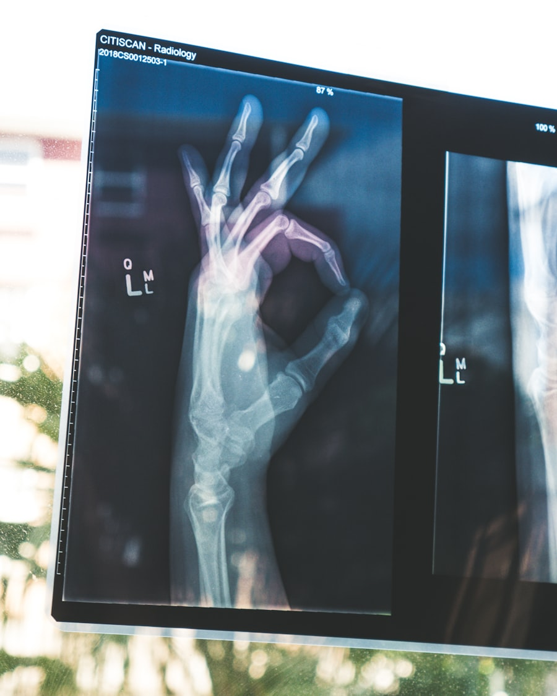
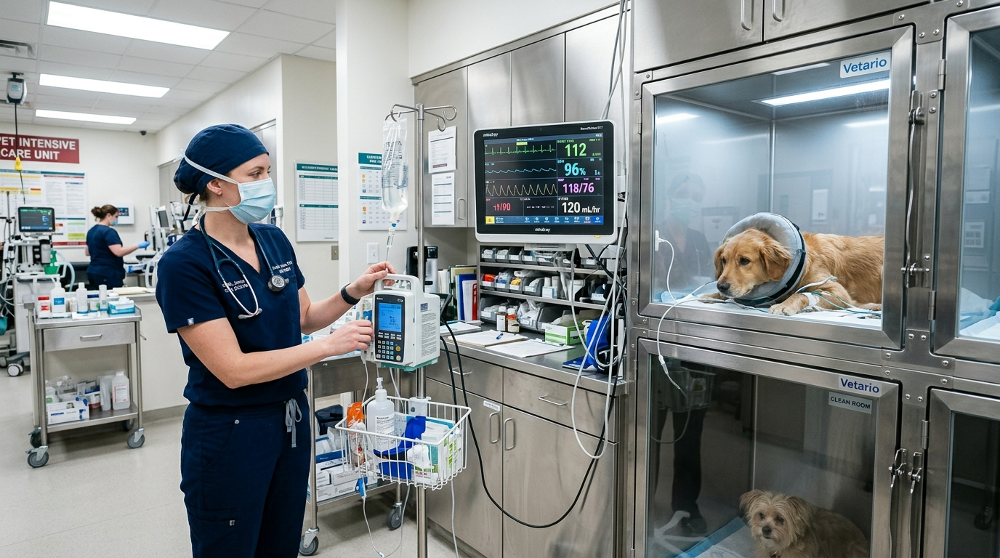
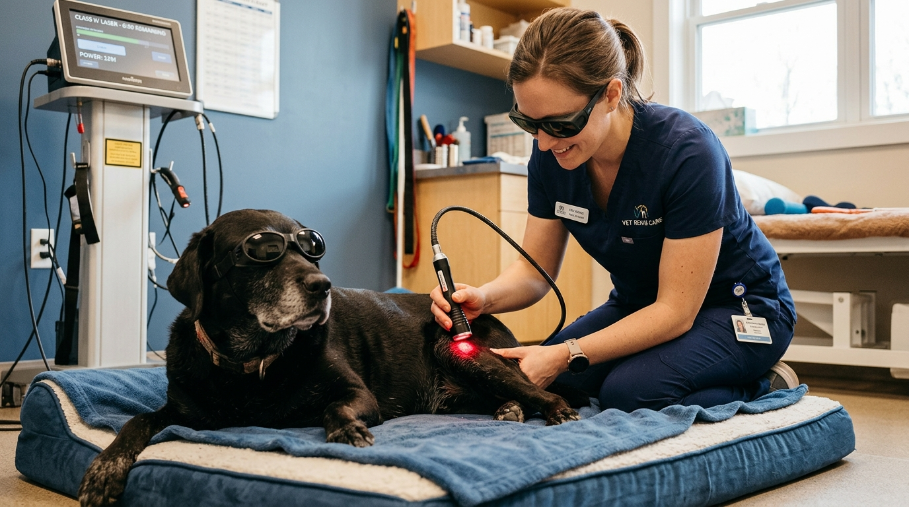

Tertiary Surgical Interventions, Complex Internal Medicine & Referral Care
Partnering with regional family veterinarians and dedicated pet families for advanced orthopedic reconstruction, minimally invasive laparoscopy, oncological surgery, and round-the-clock intensive critical telemetry.
Veterinary Referral Coordination & Second Opinion Pathway
We work in close partnership with regional primary care veterinarians and concerned pet families to deliver clear diagnostic clarity and complex surgical intervention.
Doctor-to-Doctor Referral
Seamless peer-to-peer case handoff for general practice clinicians. Submit digital DICOM x-rays, IDEXX lab panels, and clinical chart notes. We guarantee specialist review within 24 hours.
- Direct peer telephone consults before admission
- Comprehensive post-op surgical reports in <12 hrs
- Complete return to primary clinic for routine follow-up
Surgical Second Opinions
For families facing an ambiguous diagnosis, complex orthopedic injury, or high-grade tumor. Our board-certified specialists provide in-depth staging reviews and clear, evidence-based options.
- Objective review of existing radiographic studies
- Non-surgical vs. minimally invasive alternatives
- Upfront itemized surgical cost breakdowns
Direct Inpatient Hospital Transfer
Rapid ambulance or direct clinician transfer for unstable patients requiring immediate surgical theatre access, blood transfusion, or continuous high-flow oxygen telemetry.
- Dedicated surgical bay prep while in transit
- Heated Snyder oxygen chamber immediately ready
- Emergency trauma surgeon scrubbed upon arrival
Specialized Surgical Disciplines & Advanced Inpatient Units
Focusing strictly on complex clinical procedures, advanced surgical instrumentation, and tertiary veterinary therapies beyond standard outpatient care.
 Orthopedic & Spine
Orthopedic & Spine
Orthopedics & Neuro-Spine Center
Positive-pressure surgical theatre dedicated to complex biomechanical repair, joint reconstruction, and spinal decompression.
- TPLO cruciate ligament stabilization & Arthrex plates
- Rigid bone plating osteosynthesis & fracture repair
- Hemilaminectomy spinal decompression for acute IVDD

Minimally InvasiveLaparoscopy & Video Endoscopy
Rigid and flexible Karl Storz endoscopes for high-definition diagnostic imaging and surgical interventions through micro-incisions.
- Laparoscopic prophylactic gastropexy & organ biopsies
- Upper & lower GI flexible mucosal endoscopy
- Non-surgical foreign body retrieval via endoscopy

Maxillofacial SuiteMaxillofacial & Advanced Oral Surgery
Specialized dental surgical suite equipped for reconstructive jaw surgery, oncological resection, and endodontics.
- Mandibular & maxillary fracture repair
- Odontogenic tumor resection with reconstructive margins
- Full-mouth extractions with infraorbital & mental blocks

Internal Medicine & OncologyComplex Internal Medicine & Oncology
In-depth staging, chemotherapy administration, and multi-system medical management for severe metabolic pathology.
- IRIS renal disease staging & fluid hemodynamic plans
- Multi-agent chemotherapy protocols & oncology staging
- Color Doppler abdominal sonography & guided cytology

Inpatient ICU WardInpatient Telemetry & Recovery Ward
Heated post-operative patient bays with continuous vital sign telemetry, direct IV syringe pumps, and constant nurse oversight.
- Snyder heated intensive oxygen concentration cages
- Continuous arterial line pressure & SpO2 monitoring
- 24/7 dedicated inpatient nurse-to-patient ratio 1:2

Hydrotherapy & MobilityCanine Hydrotherapy & Mobility Rehab
Accelerating orthopedic and neurological recovery through buoyancy-assisted aquatic treadmill exercise and deep laser therapy.
- Heated underwater treadmill aquatic exercise
- Class IV photobiomodulation deep-tissue laser
- Post-TPLO & post-spinal gait retraining protocols
Collaborative Grand Rounds & Specialist Case Review
Complex surgical and internal medicine cases are never handled in isolation. Our surgical, internal medicine, and critical care faculty convene daily for formal grand rounds.
Surgical Architecture
Board-certified orthopedic surgeon reviews 3D digital radiographs, templates surgical implants, and establishes the optimal approach.
Metabolic Clearance
Internal medicine specialist audits organ reserve, coagulation profiles, and renal biomarkers to verify surgical candidacy.
Anesthetic Calibration
Calculation of constant rate infusion (CRI) analgesia, local nerve blocks, and customized blood pressure support protocols.
ICU Telemetry Plan
Critical care nursing supervisor coordinates post-operative arterial monitoring, warming blankets, and rapid pain score checks.
Tertiary Surgical Theater & Diagnostic Hardware
Our hospital is equipped with university-grade diagnostic hardware and sterile surgical infrastructure matching human tertiary centers.
Sound-Eklin TruDR High-Def
Digital Orthopedic Radiography
- Digital surgical templating
- Sub-millimeter anatomical resolution
- Cloud DICOM sharing for referring vets
Karl Storz HD Endoscopy
Rigid & Flexible Micro-Optics
- 1080p full optical zoom
- Micro-biopsy retrieval channels
- Integrated Xenon cold-light source
GE Logiq e Matrix Doppler
Vascular & Abdominal Sonography
- Phased-array harmonic probes
- Pulsed & continuous Doppler flow
- Real-time guided FNA cytology
SurgiVet Advisor 6-Lead
Continuous Anesthetic Telemetry
- Dual-channel invasive arterial BP
- Microstream sidestream capnography
- Continuous multi-lead ECG & core temp
Surgical Packages & Procedural Fee Schedules
All-inclusive specialty packages covering pre-operative staging, anesthesia, board-certified surgeons, ICU monitoring, and follow-up reviews. Zero surprise surcharges.
| Specialty Procedure | Diagnostic & Surgical Scope | Anesthetic & ICU Telemetry | Post-Op Care & Discharge | Package Fee |
|---|---|---|---|---|
| TPLO Cruciate Ligament Package Canine orthopedic stabilization | Pre-op digital orthogonal templating, Arthrex titanium locking plate, joint inspection | Board-certified surgeon, epidural analgesia, direct arterial line, Bair Hugger warming | Overnight ICU telemetry, 10-day multi-modal analgesics, 8-week follow-up X-rays included | $2,850 – $3,600* |
| Minimally Invasive Video Endoscopy GI endoscopy & mucosal biopsy | High-definition mucosal inspection, 6-site biopsy collection, cytology preparation | Closed-circuit isoflurane anesthesia, continuous pulse oximetry & capnography | External histopathology review by board pathologist, written staging report in 5 days | $950 – $1,450* |
| Reconstructive Maxillofacial Oral Surgery Complex extractions & flap repair | Full-mouth intraoral radiography, surgical mucoperiosteal flaps, bone contouring | Regional nerve blocks (bupivacaine), warm IV crystalloid infusion, dedicated LVT | Absorbable sutures, antiseptic oral rinse, 7-day analgesic medication packet | $680 – $1,250* |
| Specialist Second Opinion Consult Orthopedic / Internal Medicine | Comprehensive 60-min specialist review of medical history, prior imaging & lab charts | Non-Surgical Review | Written diagnostic roadmap and treatment options provided to owner & referring vet | $195 – $380 |
| Post-Op Hydrotherapy & Laser Bundle 6-Week Mobility Recovery Program | Weekly goniometric joint angle measurement, gait analysis, pain index scoring | Zero Sedation Required | 6 underwater treadmill aquatic sessions, 6 Class IV laser therapies, home exercise manual | $480 (Bundle) |
| Acute Trauma ICU Admission Protocol Immediate critical stabilization | Rapid triage in <120s, point-of-care blood gas panel, AFAST/TFAST trauma ultrasound | Heated Snyder oxygen chamber, continuous 5-lead ECG, emergency fluid resuscitation | Critical care doctor round-the-clock monitoring and twice-daily telephone physician updates | $350 – $750* |
*All specialty surgical estimates include itemized pre-anesthetic testing, peri-operative telemetry, and prescribed home medications. An itemized written estimate is always reviewed and approved prior to surgical admission.
Schedule a Specialty Consultation or Referring Vet Transfer
Whether you are scheduling a surgical second opinion, transferring an acute inpatient, or sending a patient from a primary clinic, our clinical coordinators expedite admission within 24 to 48 hours.
Specialty Consultation Triage
24/7 Critical Care & Emergency Trauma ICU
Always open and fully staffed 365 days a year. Immediate trauma triage within 120 seconds, Snyder heated oxygen cages, blood transfusion bank, and emergency surgical capabilities with zero appointment needed.